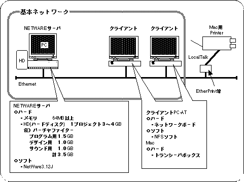
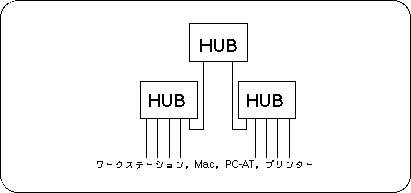

Return to previous page | Return to menu
5. Network environment
The programmer, designer, and sound development systems mentioned above can be developed more efficiently by being connected via a network. The network environment differs depending on the number of workers (number of machines). Specific network configurations (servers and clients) are described below according to the number of developers.
The figure below shows a case where Indy is operated as a single server / client.
Figure 5-1 NFS server / client network environment (for 3-6 users)

Increase the server performance by using SparcStation5 etc. as a dedicated server and using an Ether / SCSI board.
Figure 5-2 Network with dedicated server (7 or more people are recommended)
 Build an efficient network environment by using a NetWare server.
Build an efficient network environment by using a NetWare server.
Reference
NetWare is compatible with Mac and PC-AT (Windows, etc.).
Figure 5-3 Network environment with PC-AT and Mac only

The network connection method varies depending on the number of connected machines as follows.
Figure 5-4 Connection with one HUB (8 to 16 units)

Figure 5-5 Connect with 2 or more HUBs (16 or more)

Return to previous page | Return to menu